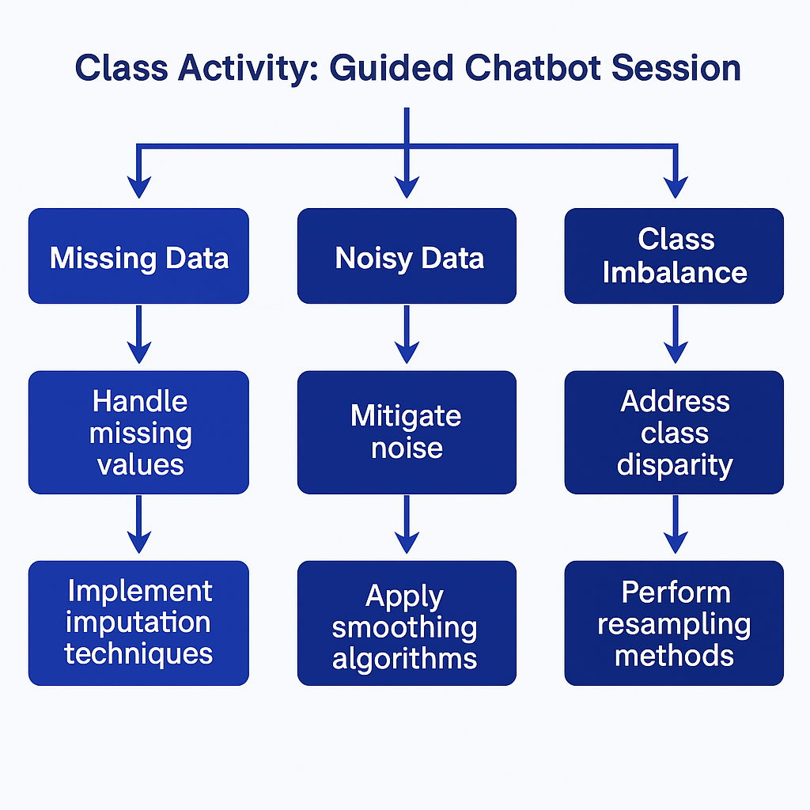

Shiyana Jayanesan Shylaja | Machine Learning Portfolio
Project Summary: This section introduces a detailed clustering analysis project using the K-Means algorithm, enriched by real-world ML scenarios involving data quality challenges. These challenges included handling missing data through imputation techniques, managing noisy datasets using filtering methods, and resolving class imbalances through resampling strategies. The scenario-based approach mimicked industry use cases and helped me build critical reasoning and preprocessing skills. Ethical AI application was emphasized, reinforcing the significance of fairness in algorithmic outcomes, particularly in education and healthcare. This multi-dimensional focus allowed me to apply classroom concepts to practical environments, preparing me for real-life ML deployment.
This section provides a step-by-step walkthrough of how I executed clustering on a cleaned dataset:
from sklearn.preprocessing import StandardScaler
from sklearn.cluster import KMeans
scaler = StandardScaler()
data_scaled = scaler.fit_transform(data)
kmeans = KMeans(n_clusters=3, random_state=42)
kmeans.fit(data_scaled)
labels = kmeans.labels_
This artifact reinforced the role of preprocessing in influencing ML outcomes. The chatbot-driven class exercises mimicked professional data problem-solving, where I learned to defend every modeling choice. Working through real-world inspired scenarios made me appreciate ethical dilemmas and the importance of model explainability. KMeans clustering pushed me to think critically about data shape, density, and model assumptions, while simultaneously cultivating ethical awareness and technical discipline.
In the next phase of this project, I plan to: